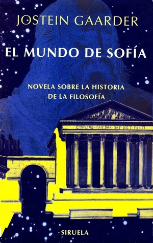

El mundo de Sofía
Reseña por Jorge I. Zuluaga

Ver reseña en GoodReads (necesita cuenta)
Y es que la originalidad y el contenido excepcional de “El mundo de Sofía” deberían hacer que fuera un libro con más resonancia, al menos como lo son otros grandes clásicos de la literatura y el ensayo.
“El mundo de Sofía” merece que sigamos hablando de él, recomendándolo sin duda a quien no lo haya leído, por mucho tiempo.
Algunas personas dirán que soy muy exagerado (con los libros que me gustan no disimulo mis emociones). Pero me tendrían que mostrar un texto en el que se combinen con la maestría en la que se combinan aquí la imaginación, la literatura y la divulgación de cualquier disciplina intelectual, en este caso de la historia de la filosofía.
Afortunadamente no sabía nada sobre el libro (a pesar de que se grabó una película que procedo a buscar y a ver). Esto me permitió disfrutar aún más con las sorpresas que contiene.
“El mundo de Sofía” parece una obra de divulgación juvenil. Es más, tengo estudiantes generación Z que me dicen que lo leyeron en el colegio. Sin embargo, yo diría que es todo menos eso. Precisamente para apreciarlo plenamente, creo que se debe tener una cierta sensibilidad y conocimientos previos. Tal vez por eso, porque mucha gente fue expuesta muy temprano al libro, es que no se le aprecia completamente y no se habla tanto de él.
Tengo 50 años, soy científico (filósofo natural diría cualquiera durante la Ilustración); por mi formación, por mi trabajo profesional, pero también por mi propia curiosidad intelectual, he leído algunos libros sesudos de filosofía. Pero nunca me había expuesto de una forma tan original, tan apasionante y tan clara a una síntesis del camino recorrido por la reflexión filosófica en Occidente como el que le regala Alberto a Sofía y a Hilda en este libro.
No quiero arruinar ninguna de las sorpresas del libro, pero en algunos apartes creí que su autor, el profesor de filosofía, la iba a embarrar: en unas ocasiones, poniendo en evidencia un teísmo no disimulado; en otras, con situaciones un poco pueriles (los muy admirados “Alicia en el país de las maravillas” o “El principito” también las tienen y nadie se queja mucho), pero a la larga se entiende el sentido de ese contenido.
¡Lean y recomienden mucho “El mundo de Sofía”!